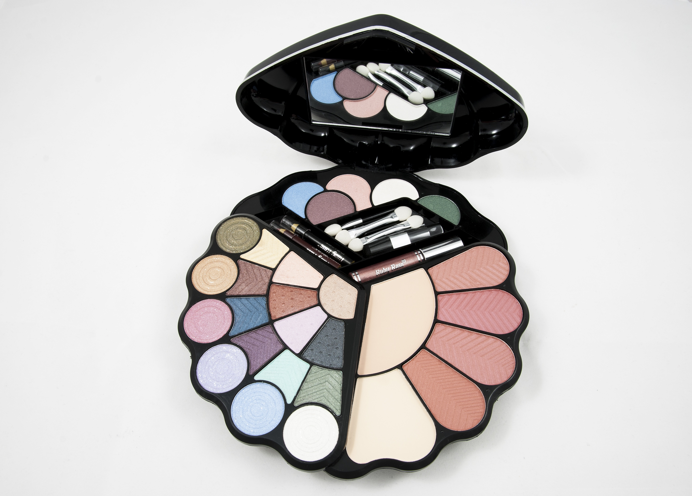
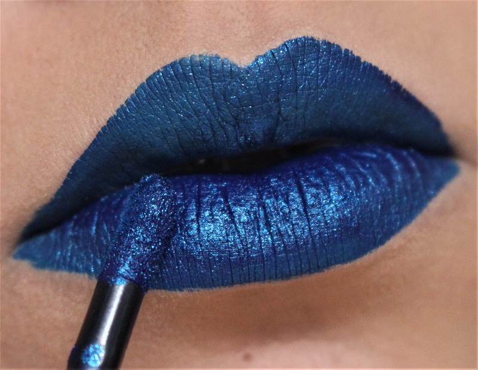
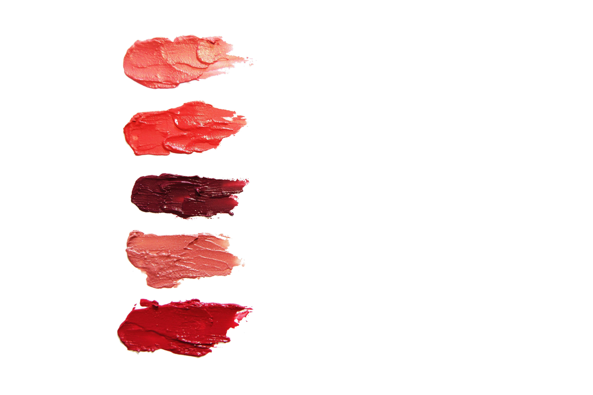
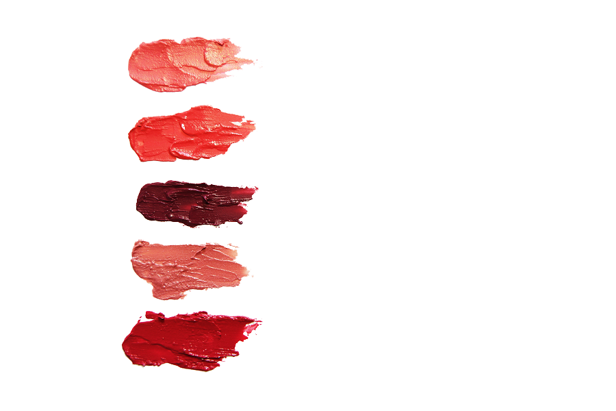
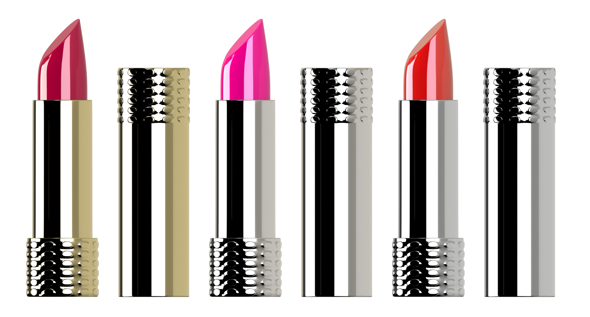

PRUEBAS IMAGENES DE MENOR TAMAÑO
En este caso al ser las imagenes más pequeñas, no funciona aplicar el contraste y brillo.Basta con reducir su tamaño en Paint u otro editor, para ver una disminucion considerable del tamño de la imagen. Ya que estas imagenes no las voy a necesitar con tanto tamaño en mi pagina web.
A continuación voy a mostrar el tiempo de carga de la imagen original con respecto a la modificada, que es la de abajo:
Imagen estuche maquillaje
- 
| NAME | STATUS | TYPE | INITIATOR | SIZE | TIME(approximately) |
|---|---|---|---|---|---|
| p1 | Finished | jpeg | prueba2.html | 1,40 MB | 100 ms |
| p1Modify | Finished | jpeg | prueba2.html | 85,5 KB | 10 ms |
Imagen labios
- 
| NAME | STATUS | TYPE | INITIATOR | SIZE | TIME(approximately) |
|---|---|---|---|---|---|
| labios | Finished | jpeg | prueba2.html | 1,42 MB | 53 ms |
| labiosModify | Finished | jpeg | prueba2.html | 177 KB | 10 ms |
Imagen manchas
- 
- 
| NAME | STATUS | TYPE | INITIATOR | SIZE | TIME(approximately) |
|---|---|---|---|---|---|
| manchas | Finished | jpeg | prueba2.html | 1,17 MB | 41 ms |
| manchasModify | Finished | png | prueba2.html | 164 KB | 10 ms |
Imagen pintalabios
- 

| NAME | STATUS | TYPE | INITIATOR | SIZE | TIME(approximately) |
|---|---|---|---|---|---|
| p5 | Finished | png | prueba2.html | 1,90 MB | 105 ms |
| p5Modify | Finished | png | prueba2.html | 190 KB | 10 ms |
Esto es una prueba con 4 imagenes que podria implementar en mi pàgina web. El resto de imagenes seria igual ir comprobando el tiempo que tarda cada una, ya que cuanto menos tarde mejor para nuestra pagina web.